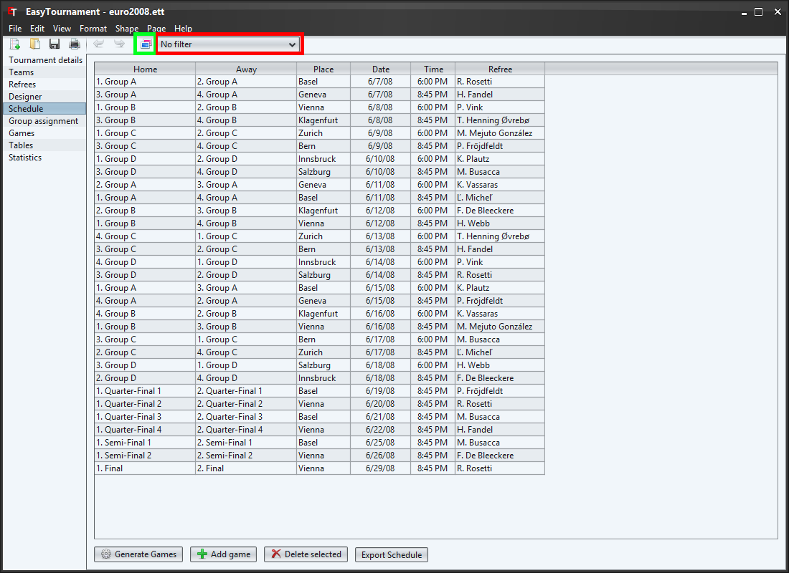

This is a short manual to instruct you to quickly create a tournament.
To create a new tournament choose the menu "File"->"New tournament" or click on the corresponding icon (marked green in the image above).

Enter the name and the sport of your tournament (Further information to this you can get in chapter Tournament details)
Enter the number of periods (half-times, thirds) and overtimes as well as their duration (Further information to this you can get in chapter Game duration and points).

On this screen you can set the rules of the ordering of the tables.
With the big arrows or by drag and drop of the rules you are able to add the available rules on the right side to the used ones on left side. The topmost rule is the one that will be used first to sort a table.
With a double-click or by selecting the corresponding entry in the context menu (right mouse button) you can set if the rule should be applied ascending or descending (e.g. the down-arrow means descending. This means that the team with the most points is at position 1 of the table).
(Further information to this you can get in chapter Rules).
This screen allows you to create teams. You can add one by clicking on the "New team" button or by selecting the corresponding entry in the context menu (right mouse button).
Double-click on a team or use the context menu to edit a team.
(Further information to this you can get in chapter Teams)
Enter the name of the team.
For a basic tournament it is not necessary to add players and staff, therefore we avoid it in this manual. If you would like to do it anyway, you can get further informations in the chapter Teams.
For a basic tournament it is not necessary to add referees, therefore we avoid it in this manual. If you would like to do it anyway, you can get further informations in the chapter Referees.
The designer is the heart of this application. Here you can define the progress of the tournament.
The available group elements are shown in the green box on the left side and can be dragged and dropped on the page. Already placed groups can be copied an deleted (delete button) as in any other graphics application.
A group can be edited with a double-click on a group or over the context menu (right mouse button).
In this window you can change the name and the number of teams. In this basic manual we skip "Game duration and points" and "Rules". Further informations to this you can get in chapter Group.
Arrows indicate to which group a team will progress if it reaches a specific position. E.g. in the designer image above the team on the first place of Group A progresses to the Quarter-Final 1 and the winner of this Quarter-Final reaches the Semi-Final 1.
You can insert an arrow by clicking on the start position in a group, keep the button down while moving to the goal position and release it there.
In duel groups arrows starting at the left position are those for the winner and at the right side for the looser of this duel.
One Team can reach multiple groups but each position has at maximum one incoming arrow. Logically cycles are not allowed.
(Further information to this you can get in chapter Designer)

With the button "Add game" or the context menu (right mouse button) a new game will be added to the schedule.
Now you can select the home position on the first column and afterwards the away position in the second column. Optionally you can edit the other cells.
The table will be sorted by date and time.
(Further information to this you can get in chapter Schedule)

On this screen you can assign the teams to a group. On the left side are the unassigned teams (e.g. in the image above Switzerland and Austria don't belong to any group). On the right side all groups with starting positions (no incoming line/arrow) are shown.
You can drag and drop the teams between groups and the desired position in the group.
(Further information to this you can get in chapter Group assignment)

This table is very similar to the one in the schedule screen. It shows the team names instead of the positions and has two additional score columns.
The table is ordered according the date and time.
There are 3 different ways to enter a score. In the basic manual we just explain the easiest one.
To do this you just have to click into the corresponding score cell and enter the number.
(Further information to this you can get in chapter Games)

As the name states you can see the tables, which are sorted according to the in Rules defined rules.
(Further information to this you can get in chapter Tables)
Because we only used the easiest way of entering scores we can only evaluate the statistic "Goals incl. penalty shoot-out" grouped by teams.
(Further information to this you can get in chapter Statistics)